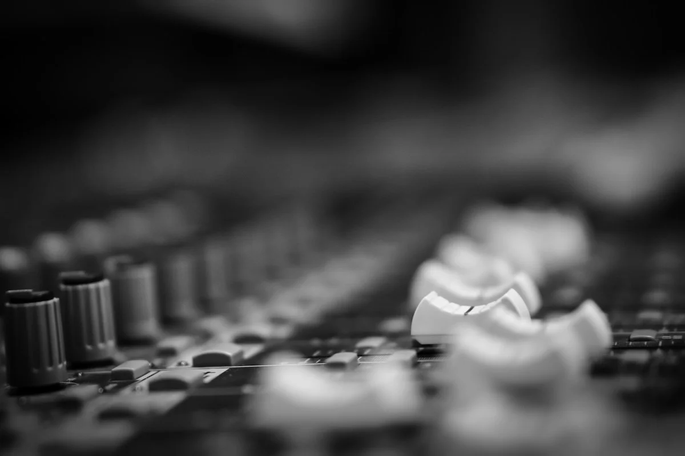

01 / MUSIKPRODUKTIONAus deiner Idee
Aus deiner Idee
wird dein Song.
Eine Melodie im Kopf, eine Textzeile auf dem Handy oder schon ein ganzes Demo? Gemeinsam entwickeln wir daraus eine Produktion mit eigener Handschrift.
- Individuelle Beats & Instrumentals
- Songwriting, Arrangement & Sounddesign
- Begleitung von der Idee bis zum fertigen Track
